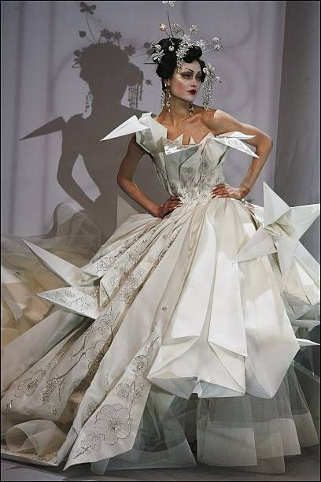

Milán, 10 de junio de 2024. Gucci, uno de los nombres más venerados en la moda de lujo, ha anunciado un cambio significativo en su dirección creativa. Alessandro Michele, quien revitalizó la marca durante su mandato, está dejando su puesto como director creativo. En su lugar, el joven prodigio de la moda, Matteo Rossi, asumirá el liderazgo creativo.
Contexto del Cambio
Alessandro Michele ha sido una fuerza transformadora en Gucci desde que asumió el cargo en 2015, conocido por su estilo ecléctico y su capacidad para atraer a una nueva generación de consumidores. Su salida marca el final de una era caracterizada por un crecimiento exponencial y la redefinición de la identidad de Gucci.
Matteo Rossi, de 32 años, ha sido descrito como una de las mentes más brillantes de la moda contemporánea. Anteriormente, trabajó como diseñador principal en Balenciaga, donde fue aclamado por sus innovaciones y su enfoque en la sostenibilidad.
Reacciones y Expectativas

La noticia ha generado una mezcla de sorpresa y entusiasmo en la industria. "Es un cambio audaz, pero Gucci siempre ha sido una marca que se atreve a reinventarse," comentó Anna Wintour, editora de Vogue. "Estoy emocionada por ver la visión de Matteo Rossi y cómo continuará evolucionando la marca."
Rossi ha prometido honrar el legado de Michele mientras lleva a Gucci en nuevas direcciones, enfocándose en la innovación y la sostenibilidad. Sus primeras colecciones serán observadas de cerca por críticos y consumidores por igual.